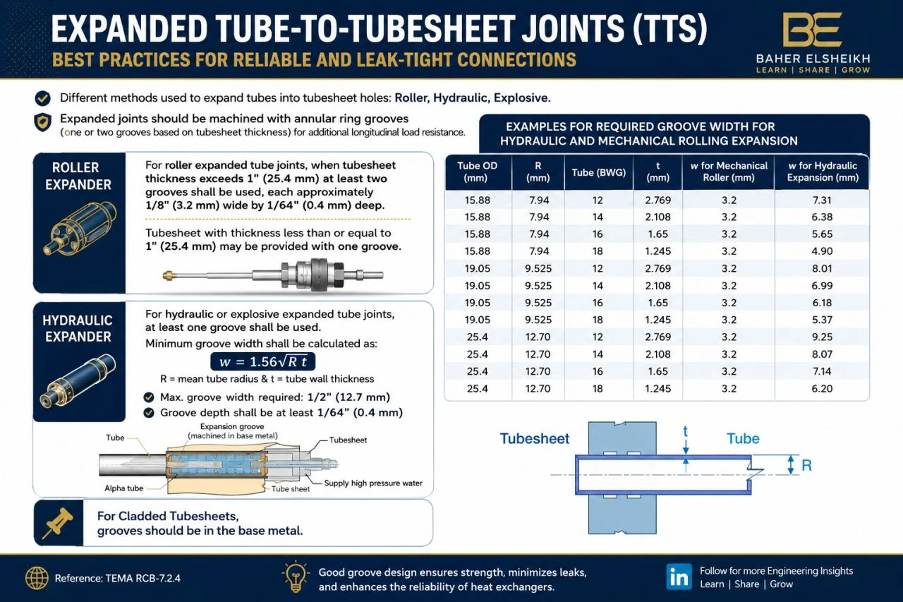

Expanded Tube-to-Tubesheet Joints: Why the Groove Dimensions Aren't One-Size-Fits-All
When tubes are expanded into tubesheet holes, the expansion method, mechanical rolling or hydraulic and explosive expansion, changes the groove design that should be specified. Rolling uses a fixed groove size; hydraulic and explosive expansion need a groove width calculated from the tube size.
Why grooves
Tubes are expanded into the tubesheet holes by roller, hydraulic or explosive methods. The holes of expanded joints are machined with annular grooves, one or two depending on the tubesheet thickness, so that the tube wall is pushed into the grooves during expansion. This gives the joint additional resistance to longitudinal load.

1. Mechanical roller expansion
When the tubesheet is thicker than 1 in. (25.4 mm), at least two grooves are required, each approximately:
- Width: 1/8 in. (3.2 mm)
- Depth: 1/64 in. (0.4 mm)
For tubesheets 1 in. (25.4 mm) thick or less, a single groove may be provided.
2. Hydraulic or explosive expansion
Here the approach changes from a fixed width to a calculated one. At least one groove is required, with a minimum width of:
where R is the mean tube radius and t is the tube wall thickness.
- The groove width need not exceed 1/2 in. (12.7 mm).
- The groove depth is at least 1/64 in. (0.4 mm).
Groove width for common tube sizes
The table shows how this works for common tube sizes, 15.88 to 25.4 mm OD and BWG 12 to 18. The required hydraulic groove width ranges from about 4.7 mm to 8.7 mm and grows with tube diameter and wall thickness, while the roller expansion groove stays at 3.2 mm whatever the tube size. None of the values reaches the 12.7 mm limit.
| Tube OD (mm) | BWG | t (mm) | Mean radius R (mm) | w, roller expansion (mm) | w, hydraulic expansion (mm) |
|---|---|---|---|---|---|
| 15.88 | 12 | 2.769 | 6.56 | 3.2 | 6.65 |
| 15.88 | 14 | 2.108 | 6.89 | 3.2 | 5.94 |
| 15.88 | 16 | 1.650 | 7.12 | 3.2 | 5.35 |
| 15.88 | 18 | 1.245 | 7.32 | 3.2 | 4.71 |
| 19.05 | 12 | 2.769 | 8.14 | 3.2 | 7.41 |
| 19.05 | 14 | 2.108 | 8.47 | 3.2 | 6.59 |
| 19.05 | 16 | 1.650 | 8.70 | 3.2 | 5.91 |
| 19.05 | 18 | 1.245 | 8.90 | 3.2 | 5.19 |
| 25.40 | 12 | 2.769 | 11.32 | 3.2 | 8.73 |
| 25.40 | 14 | 2.108 | 11.65 | 3.2 | 7.73 |
| 25.40 | 16 | 1.650 | 11.88 | 3.2 | 6.91 |
| 25.40 | 18 | 1.245 | 12.08 | 3.2 | 6.05 |
Clad tubesheets
For clad tubesheets, the grooves must be machined in the base metal, not in the cladding layer.
Summary
- Roller expansion: one groove for tubesheets up to 1 in. thick, at least two above that, each about 1/8 in. wide and 1/64 in. deep.
- Hydraulic or explosive expansion: at least one groove, w = 1.56 √(R t), up to 1/2 in., depth at least 1/64 in.
- R is the mean tube radius, so the width follows the tube size.
- In clad tubesheets, grooves go in the base metal.
A good groove design gives the joint strength, reduces the risk of leaks and improves the reliability of the heat exchanger.
References
- TEMA, Standards of the Tubular Exchanger Manufacturers Association, paragraph RCB-7.2.4.
This article is for general engineering guidance. Apply the edition of TEMA and the project specifications used for the exchanger, with the judgement of a qualified engineer.